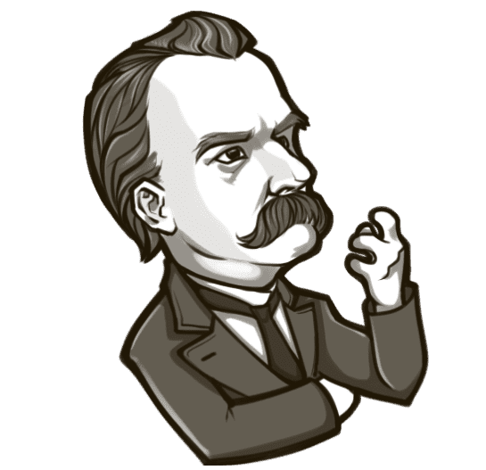
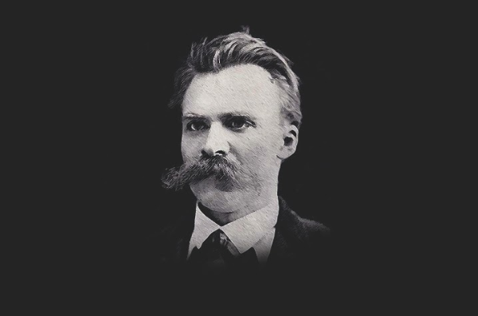

Ницше стремился к господству и власти. Это его главная жизненная цель и смысл существования.
Для философа воля представляла основу мира, состоящую из множества случайностей и наполненная беспорядком и хаосом.
Воля к власти привела Ницше к идее создания «сверхчеловека».

Жизнь, согласно философу, является уникальной и отдельной реальностью для каждого человека. Она жестко критикует учения и выражения, которые касаются мыслей как показателя человеческого существования. Также жизнь не стоит отождествлять с понятием разума. Ницше считает, что жизнь – это постоянная борьба, главным качеством которой выступает воля.
Основные идеи коснулись и мыслей касательно идеального человека. Он крушит все правила, идеи и нормы, предписанные людьми. Ницше как бы напоминает, что все это фикция, которую навязало нам христианство. Кстати, философ рассматривал христианство как инструмент, навязывающий людям качества, которые создают рабское мышление, из сильных личностей делают слабых. Религия при этом слишком идеализирует слабого человека.
Проблемы бытия Ницше освещает вкратце. Философ уверен, что противопоставить эмпирическое и истинное не можно. Отрицание реальности способствует отрицанию декадансу и человеческой жизни. Мыслитель уверен, что абсолютного бытия не существует. Есть всего лишь круговорот жизни, в котором постоянно повторяется то, что когда-то уже было. Кроме того, Фридрих Ницше критикует религию, нравственность, науку, разум. Он уверен, что большая часть людей на планете неразумные, жалкие и неполноценные личности. Единственный способ управления ими – это военные действия. Мыслитель также агрессивен по отношению к женщинам. Он отождествлял их с коровами, кошками и птицами. Единственная роль женщины – это вдохновлять мужчину, а он, в свою очередь должен ее держать в строгости и применять физические наказания.

Подлинный Ницше проповедует суровую дисциплину нравственного самообуздания и бесстрашный героизм идейного одиночества. Он высоко ставит в человеке трагическое мужество и упрямую решимость бороться со слепой и рабской инерцией жизни. Он предостерегает от малодушной привязанности к наслаждениям и грозно осуждает тех, «кто много коротких безумств назвать решается любовью». В своей философии Фридрих Ницше клеймит тех, кто превратился из мнимого героя в подлинного сластолюбца, кто стал жить в кратких наслаждениях и утратил высокую цель за пределами дня.
Сверхчеловек грядущего, о котором одно время страстно мечтал Ницше, далек, по его представлению, от того, чтобы беззаботно и безвозбранно развертываться во всю ширь жизнерадостных энергий. Суть сверхчеловека в том, что он свято блюдет героя в сердце своем и мужественно идет в свое трагическое одиночество.